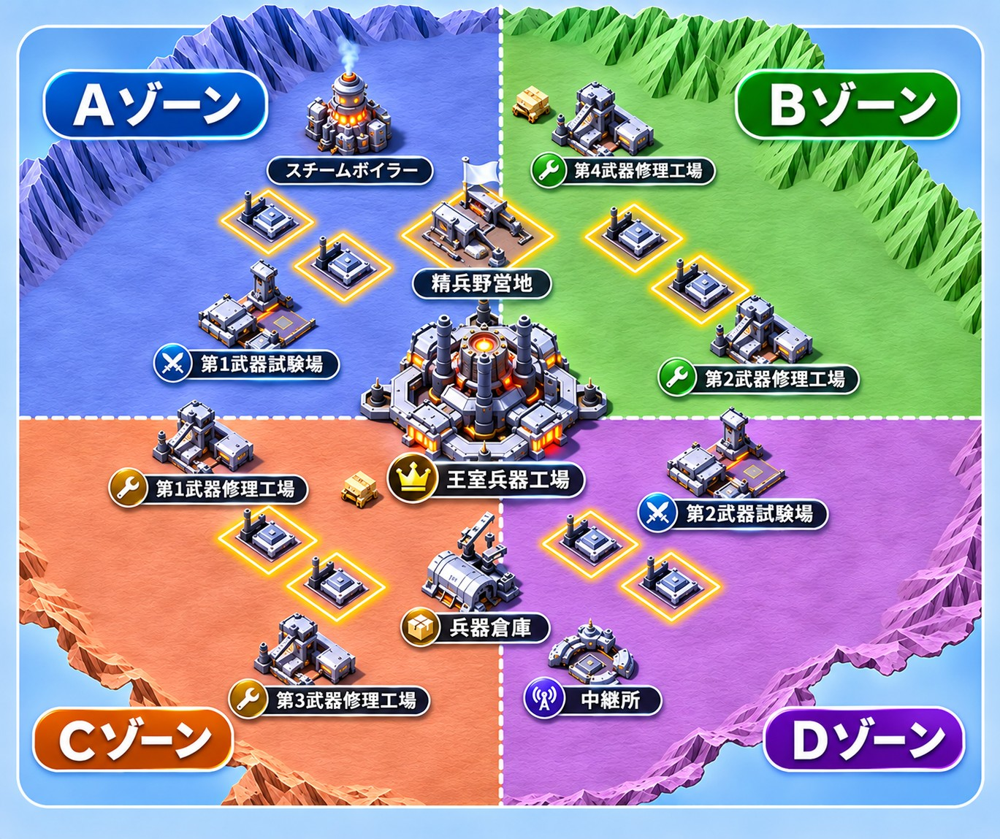
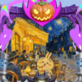
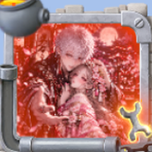
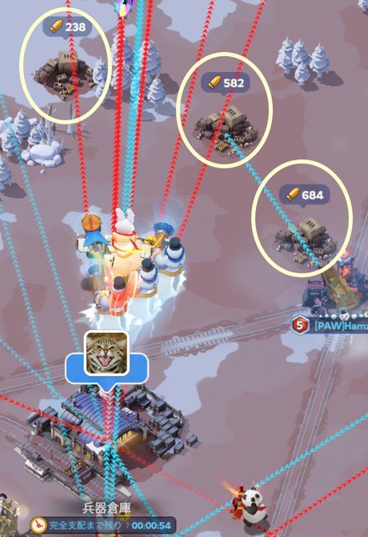

★LO
指揮官★カネキこのマップは自陣＝左側のSafe zoneで作成。
Safe zoneが左右逆になる場合は、配置位置（担当施設・玉拾いゾーン）を左右反転させること。
出し方：①は自分の担当施設へ。②③は試験場の増援、④は近くの施設。⑤は味方の集結に乗る（終盤は王室集結へ）。⑥は採集。施設が満員の時は近くの自陣施設か採集へ。KINAの①は開幕に試験場2へ集結、センテンススプリングの①は第2フェーズ開放まで集結参加。四隅の採集専門（A ちくわ・B BLACK PANDA・C Tummy・D 夜舞ちゃん）は担当の隅で採集し、敵の強い人が近くに来たら近くの仲間と2〜3連で倒す。玉拾い班（緑の6人）は集結に乗らない。名前の横のA〜Dは担当ゾーン（1枚目マップで色分けしたエリア）。奪還の集結が出たら落ちる施設の近くで待機し、割れた直後に拾って即帰還。
出欠確認。ダイヤバフはKINA・ぽてちゃん・Haachi・センテンススプリングに集中。治療加速は温存
KINA→試験場2、Haachi→試験場1へ1分集結。修理工場班も同時に確保。奪ったらぽてちゃんが試験場2を引き継ぐ
センテンススプリングが兵器倉庫を集結で確保。王室にはまだ手を出さない
同格は残り15分、格上は残り5分でKINA・ぽてちゃんが集結。全員の⑤が乗る
試験場2つの防衛が最優先。敵寄りの修理工場は取られてもOK
KINAとぽてちゃんで敵の試験場へ同時着弾。装備の入れ替えを封じる
相手の都市はガラ空き。KINA・センテンススプリングで都市攻撃、着弾前に戻る
試験場を連弾でリセットし続ける。採集と玉拾いを取り切る

拠点を割った直後、玉は必ず拠点から少し離れた場所に飛ぶ（画像の〇）
玉拾い班は拠点の真横ではなく、少し離れた場所へ移転して待つ
割れたらすぐ拾って即帰還
| 施設 | 初回 | 毎分 |
|---|---|---|
| 王室兵器工場 | 9,000 | 1,800 |
| 武器試験場 | 6,000 | 1,200 |
| 武器修理工場 | 3,000 | 600 |
| ボイラー・中継所 倉庫・野営地 | 1,200 | 240 |
初回は最初に完全支配した同盟だけ。施設の色が変わったら獲得。